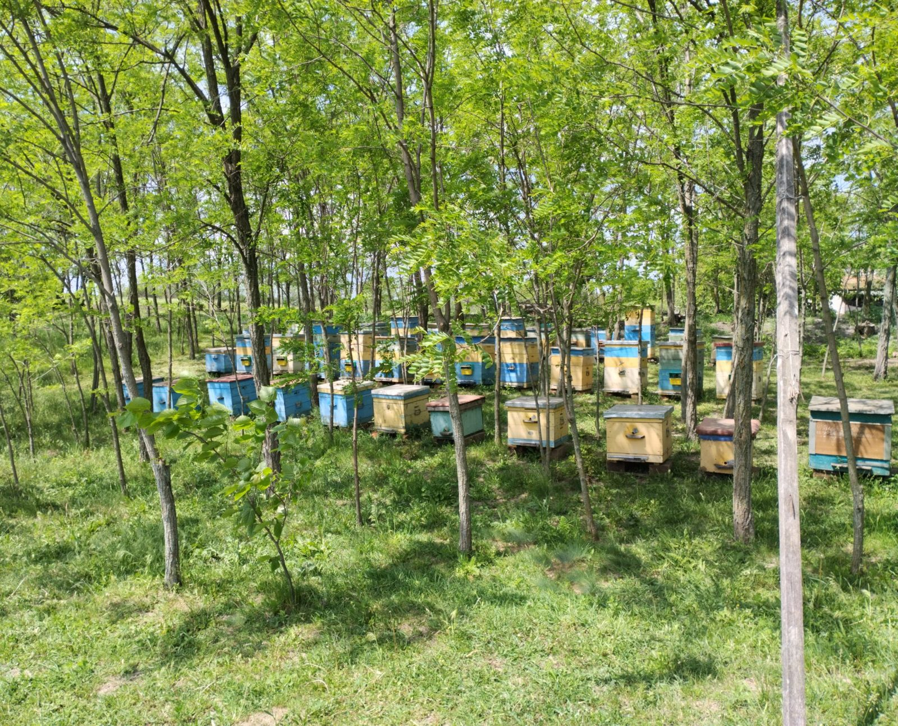

Я пасічник. Тут я пишу про те, що відбувається біля моїх вуликів у Гурівці на Кіровоградщині: який мед ми качаємо, коли і чому він щороку різний. Без реклами і продажів — просто розповідь людини з пасікою.
